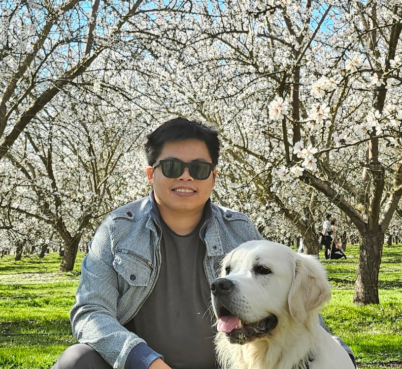

Tuan Q. Dinh
Postdoc · UCSF & Maze Therapeutics
I build and study foundation models — with a focus on what happens after pre-training: alignment, adaptation, hallucination, and generalization to new domains. Currently applying these ideas to computational biology (proteins, genetics) as a postdoc at UCSF and Maze Therapeutics. Ph.D. from UW–Madison with Kangwook Lee, where I worked on modular and robust machine learning systems.

Right now I'm thinking a lot about how protein language models encode functional information — and whether that signal is recoverable enough to drive variant effect prediction at clinical scale. It's a surprisingly hard problem: the models are powerful but their uncertainty is poorly calibrated.
More broadly I'm interested in continual learning and domain adaptation — how to keep a model useful as the world (or the data) changes, without forgetting what it already knows.
Full list on Google Scholar. Includes 2 US patents in deep learning optimization and inverse graphics.
Alternating between ML papers and whatever I can finish on train/shuttle. Favorite: The Three-Body Problem, and a lot on mechanistic interpretability.
I read and sometimes translate old poems — searching for ones written for a specific moment. One I keep returning to:
"I chase the mist where whispers lie, The wise take wing beneath the sky."
Originally from Hue, Vietnam. The name is Tuan — [tʰwɑ̃n]. In Vietnamese, the name structure is reverse of standard English; and the given name is primary.